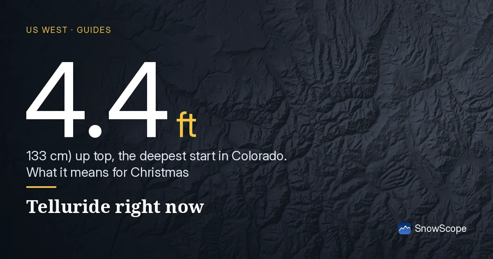
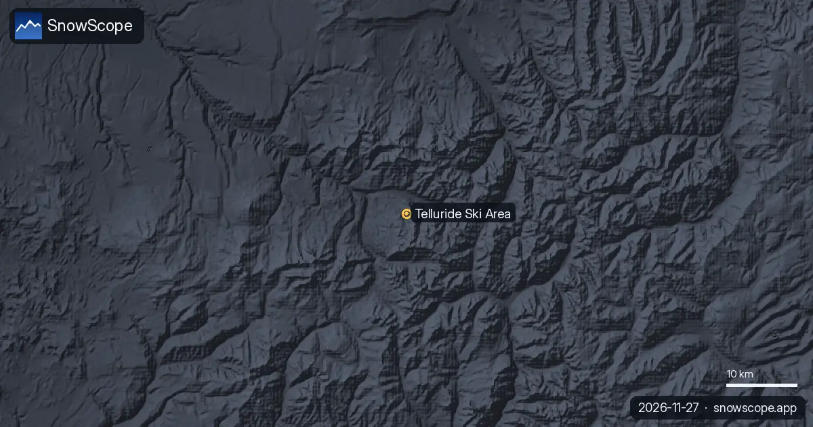

Telluride right now: 4.4 ft (133 cm) up top, the deepest start in Colorado. What it means for Christmas
Telluride has 4.4 ft (133 cm) of snow on its upper slopes right now, more than any other large Colorado resort, and it is ahead of a normal year: 20 in (50 cm) at 10,620 ft (3,237 m) against a usual 17 in (44 cm) for November 27. For Christmas that is a good head start, although the next few days add only about 2 in (4 cm).
See the live snow forecast for Telluride Ski Area in the SnowScope appSnow depth, powder alerts and the 3D map, free.

How Telluride got ahead
Most of this cover came from the storms of mid-November that favoured the San Juans over the central Colorado ranges. In the past seven days the mountain added 7 in (19 cm); the last three were quiet. Compare that with the I-70 resorts: Vail has 13 in (34 cm) on its upper runs and Breckenridge 13 in (33 cm).
Telluride's lifts climb to 12,507 ft (3,812 m), the base is at 8,734 ft (2,662 m), and the high, north-facing terrain keeps early snow better than the sunny lower slopes above the town.
What a usual Christmas looks like
On December 25 the usual depth at 10,620 ft (3,237 m) is 33 in (84 cm); one Christmas in four has less than 21 in (53 cm), one in four more than 45 in (114 cm). A 50 cm (20 in) base by New Year was reached in 80% of 46 winters, and by mid-December in 72%.
Telluride is drier than Utah or Wyoming: December typically adds snow in a few storms rather than a steady stream, and long dry spells are part of the pattern.
A lesson from last winter
The leanest winter of the 46 on our record was the last one, 2025-26, which peaked at 30 in (76 cm). The best was 1983-84 at 8.4 ft (256 cm). Starting this December with a bigger base than a normal year is exactly what was missing last season.
Follow the numbers at the base, mid-mountain and top on the Telluride snow page.
Christmas week, step by step
The usual depth at 10,620 ft (3,237 m) grows from 26 in (66 cm) on December 15 to 30 in (76 cm) on December 20 and 33 in (84 cm) on Christmas Day, then 37 in (93 cm) on New Year's Day. This year the mountain already stands above its normal path, so even an average December would put it ahead of a usual Christmas.
The risk is a long dry spell. The next three days bring only about 2 in (4 cm), and the seven-day forecast adds 5 in (12 cm) at the top: the early lead will be held, not extended, this week.
For skiers that means good groomed snow on the upper mountain now, and the steeper, higher terrain depends on what the December storms add on top.
Where to ski over the holidays
With a deep early base, the upper lifts and the high bowls are the first to open fully; the lower mountain into town relies more on grooming and snowmaking in December. Mountain Village is the easier base for families, with the free gondola linking it to town.
The town of Telluride itself is at the bottom of the lower runs, so a ski-in finish to the day depends on the lower mountain's cover, which is the part that needs December snow. Over Christmas week the best plan is to ski the upper lifts in the morning, when the snow is firm and fast, and come down by gondola if the runs into town are thin. Book restaurants early; the town is small and holiday evenings fill quickly.
Tips for skiers
- Book Christmas now: Telluride has a limited number of beds and a deep start in a dry Colorado year draws people from other resorts.
- Fly into Montrose or Telluride itself; the drive from Denver is long in winter.
- Start the day high and come down as the sun softens the lower slopes.
- See how other Colorado resorts compare on the US West snow hub and our Christmas skiing page.
About these numbers
Snow numbers: SnowScope's snow map and forecast for today, and our record of 46 past winters at each resort (an estimate for the area, not the resort's own report).
Official avalanche bulletins: Colorado Avalanche Information Center
Cite this report
For research, teaching or the press: the numbers and charts are free to reuse under CC BY 4.0 with this citation.
SnowScope (2026), Telluride right now: 4.4 ft (133 cm) up top, the deepest start in Colorado. What it means for Christmas, https://snowscope.app/blog/en/2026/11/telluride-christmas-2026-snow-deepest-in-colorado-right-now.html, accessed 2026-11-27
SnowScope (Atlas Labs). (2026, November 27). Telluride right now: 4.4 ft (133 cm) up top, the deepest start in Colorado. What it means for Christmas. SnowScope snow reports. https://snowscope.app/blog/en/2026/11/telluride-christmas-2026-snow-deepest-in-colorado-right-now.html
BibTeX
@misc{snowscope2026telluridechristmas2026sn,
author = {{SnowScope (Atlas Labs)}},
title = {Telluride right now: 4.4 ft (133 cm) up top, the deepest start in Colorado. What it means for Christmas},
year = {2026},
month = nov,
howpublished = {\url{https://snowscope.app/blog/en/2026/11/telluride-christmas-2026-snow-deepest-in-colorado-right-now.html}},
note = {Published 2026-11-27 20:19 UTC; accessed 2026-11-27}
}· CC BY 4.0 · Methods, data and tools →
Telluride Ski Area: snow and temperature by height, this winter vs last (tools) →
Follow Telluride Ski Area
Free: a message when fresh snow is coming, and the forecast every morning.
More snow reports

Telluride has 39 inches today. Peak snow weeks historically arrive in late December and March, not November.

Telluride's mid-slopes show 9 in (24 cm), running 92 percent of the seasonal average for mid-November. Saturday's system adds 5 in (13 cm) mostly above 10,000 ft.

Vail in numbers: a usual peak of about 64 in (162 cm) at mid-mountain over 46 past winters, March the deepest month, plus terrain, access and safety.